Aplikasi Mobile Pengaduan Masyarakat
Menghubungkan masyarakat dan pemerintah melalui sistem pelaporan yang transparan
Tanggap adalah platform pengaduan masyarakat berbasis mobile yang dirancang untuk membantu warga melaporkan berbagai permasalahan di lingkungan sekitar, seperti kerusakan infrastruktur, masalah sampah, dan gangguan fasilitas umum. Platform ini berfokus pada penyediaan saluran komunikasi yang lebih terstruktur dan transparan antara masyarakat dan pemerintah daerah.
Masyarakat sering mengalami kesulitan dalam melaporkan permasalahan publik karena proses yang tidak jelas, kurangnya umpan balik, serta saluran komunikasi yang tidak terstruktur. Banyak laporan yang tidak ditindaklanjuti, dan pengguna jarang mendapatkan pembaruan status, sehingga menimbulkan frustrasi dan menurunkan kepercayaan terhadap layanan pemerintah.
Tujuan dari proyek ini adalah merancang sistem pelaporan yang intuitif dan mudah diakses, sehingga pengguna dapat dengan mudah mengirim pengaduan, melacak status laporan, serta menerima pembaruan secara real-time. Dengan meningkatkan transparansi dan kemudahan penggunaan, platform ini diharapkan dapat mendorong partisipasi masyarakat dan memperkuat kepercayaan terhadap layanan pemerintah.
Untuk memahami bagaimana masyarakat melaporkan permasalahan publik dan berinteraksi dengan sistem pengaduan yang ada, saya melakukan penelitian pengguna yang berfokus pada pengalaman pelaporan di kehidupan nyata. Penelitian ini mengeksplorasi bagaimana masyarakat merespons isu seperti kerusakan jalan, masalah sampah, dan gangguan layanan publik, serta ekspektasi mereka terhadap platform pelaporan digital.
Saya melakukan wawancara kualitatif dengan 5 partisipan yang pernah melaporkan permasalahan publik. Wawancara ini berfokus pada pemahaman terhadap perilaku pelaporan, kendala yang dihadapi selama proses, serta ekspektasi mereka terhadap sistem pelaporan yang lebih efektif.
Penelitian ini mengungkap pola perilaku pengguna yang berbeda dalam cara masyarakat melaporkan permasalahan publik:
Pengguna yang memiliki inisiatif untuk melaporkan permasalahan ketika menemui isu di lingkungan sekitar.
Pengguna yang memilih tidak melaporkan permasalahan karena rendahnya kepercayaan terhadap sistem.
Permasalahan utama bukan terletak pada rendahnya keinginan masyarakat untuk melaporkan, melainkan kurangnya transparansi dan umpan balik setelah laporan dikirim. Tanpa visibilitas terhadap proses penanganan, pengguna kehilangan kepercayaan dan menjadi enggan menggunakan sistem pelaporan formal.
Insight dari tahap Empathize menunjukkan bahwa masyarakat memiliki kemauan untuk melaporkan permasalahan publik, namun pengalaman mereka terhambat oleh kurangnya transparansi dan umpan balik. Proses pelaporan saat ini belum memberikan kejelasan mengenai apa yang terjadi setelah laporan dikirim.
Motivasi pengguna bukanlah masalah utama—melainkan kepercayaan. Ketika pengguna tidak menerima pembaruan atau konfirmasi, mereka cenderung menganggap laporan mereka diabaikan. Seiring waktu, hal ini menurunkan keterlibatan dan mendorong pengguna beralih ke saluran informal yang dianggap lebih responsif.
Berdasarkan insight yang diperoleh, dibuat satu persona utama untuk merepresentasikan pengguna target.
Raden Nuralif adalah seorang mahasiswa yang tinggal di Bandung. Ia pernah menemukan masalah kabel listrik yang berbahaya di lingkungannya dan memutuskan untuk melaporkannya melalui platform pengaduan online.
Namun, setelah mengirim laporan, ia tidak menerima respons maupun pembaruan dari pihak pemerintah daerah. Kurangnya umpan balik ini membuatnya merasa bahwa sistem tersebut tidak efektif dan kurang dapat diandalkan.
Raden mengharapkan sistem pengaduan yang memberikan respons yang jelas, proses yang transparan, serta penyelesaian yang lebih cepat. Tanpa adanya komunikasi dan umpan balik yang memadai, ia cenderung kehilangan kepercayaan dan enggan menggunakan sistem pelaporan formal kembali.
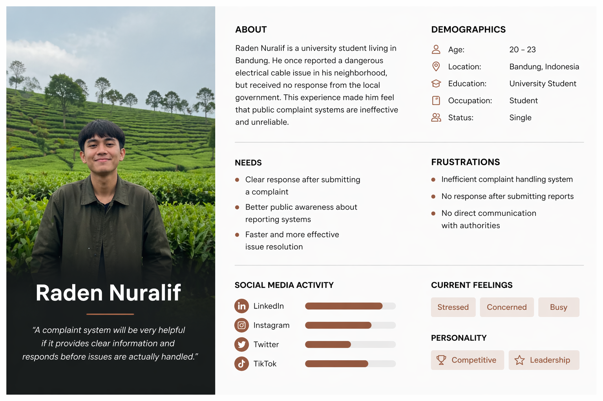
Masyarakat membutuhkan sistem pengaduan yang menyediakan pelacakan status yang jelas, komunikasi yang transparan, serta umpan balik yang berkelanjutan, sehingga mereka merasa yakin bahwa laporan mereka diterima dan sedang ditindaklanjuti.
Bagaimana kita dapat merancang sistem pelaporan yang transparan, memberikan informasi status secara berkelanjutan, dan mampu membangun kembali kepercayaan pengguna terhadap layanan publik?
Berdasarkan permasalahan yang telah dirumuskan, solusi difokuskan pada pengembangan sistem pengaduan yang transparan dan mudah digunakan. Sistem ini memungkinkan masyarakat untuk melaporkan masalah dengan mudah, melacak progres penanganan, serta menerima pembaruan secara berkelanjutan. Tujuannya adalah meningkatkan kepercayaan pengguna dengan menghadirkan proses pelaporan yang lebih terlihat, terstruktur, dan responsif.
Pada tahap ideasi, dihasilkan beberapa fitur inti yang dirancang untuk mengatasi pain points pengguna dan meningkatkan pengalaman pelaporan secara keseluruhan.
Alur pelaporan yang sederhana dan terarah untuk memudahkan pengguna mengirim laporan dengan cepat.
Sistem pelacakan transparan yang membantu pengguna mengetahui status laporan secara berkala.
Memungkinkan interaksi antara pengguna dan pihak berwenang untuk mengurangi ketidakpastian.
Tempat terpusat bagi pengguna untuk memantau seluruh laporan yang telah dikirim.
Prototipe dengan tingkat fidelitas rendah hingga tinggi dikembangkan untuk memvalidasi usability, alur navigasi, serta kejelasan proses pelaporan. Fokus utama adalah memastikan pengguna dapat mengirim laporan dengan mudah dan melacak progresnya secara jelas tanpa kebingungan.
Wireframe low-fidelity difokuskan pada penyederhanaan alur pelaporan dan kejelasan di setiap langkah. Layar utama seperti pengiriman laporan, pelacakan status, dan riwayat laporan dirancang sejak awal untuk menguji bagaimana pengguna berinteraksi dengan sistem.
Perhatian khusus diberikan pada upaya mengurangi hambatan dalam proses pelaporan. Desain memastikan pengguna dapat mengirim laporan dengan cepat melalui langkah yang minimal, namun tetap terstruktur agar mudah diproses oleh pihak berwenang.
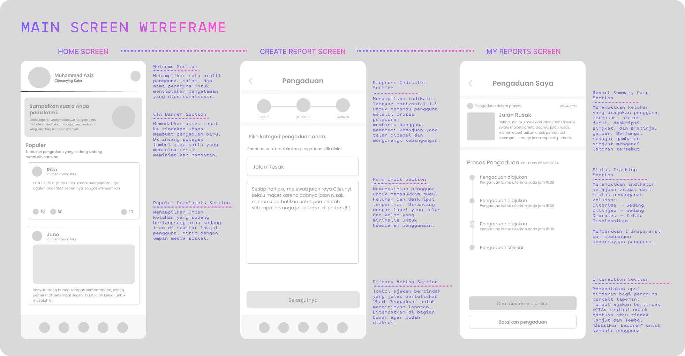
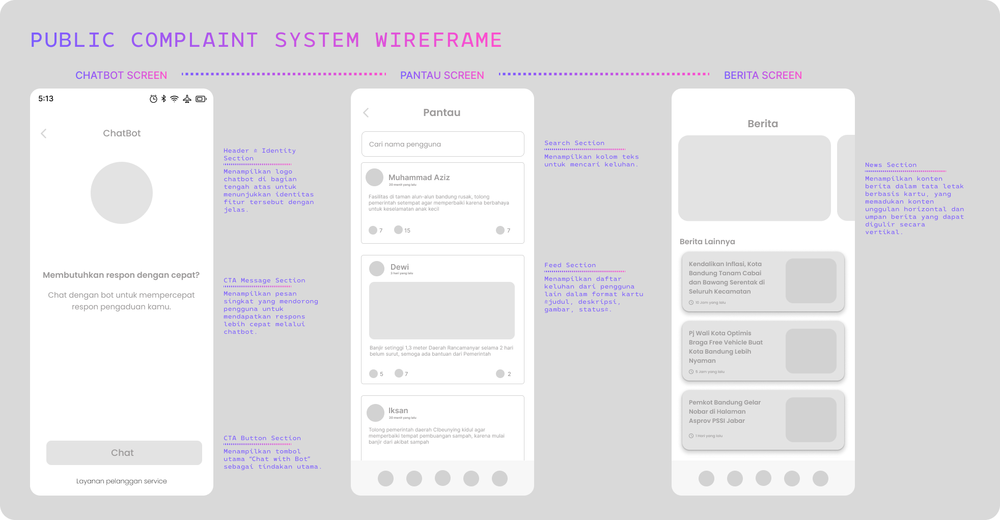
Pada tahap high-fidelity prototype, desain dikembangkan lebih lanjut untuk merepresentasikan pengalaman pengguna yang lebih realistis dalam sistem pelaporan masyarakat. Fokus utama adalah memastikan alur pelaporan dapat berjalan dengan cepat, jelas, dan mudah dipahami oleh pengguna dari berbagai latar belakang.
Setiap layar dirancang untuk mendukung efisiensi proses pelaporan, mulai dari pengiriman laporan, pelacakan status, hingga akses informasi dan riwayat laporan. Selain itu, elemen visual diperkuat untuk meningkatkan keterbacaan informasi serta membantu pengguna dalam memahami langkah-langkah yang harus dilakukan.
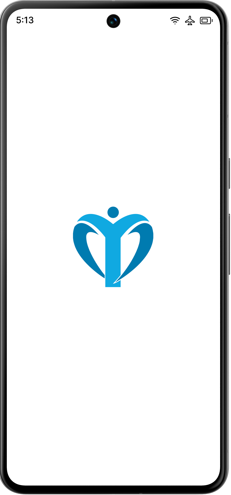
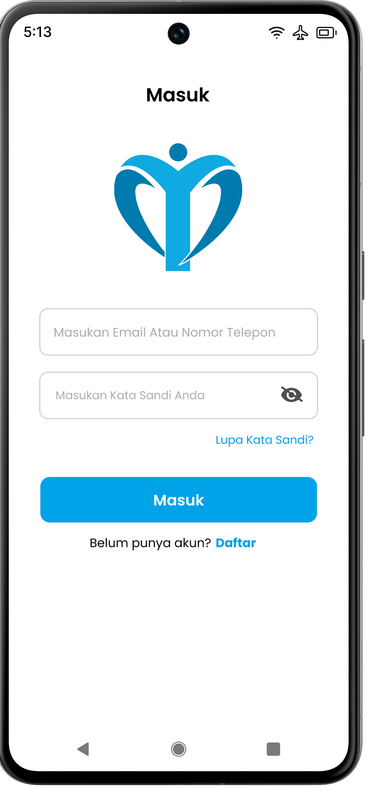
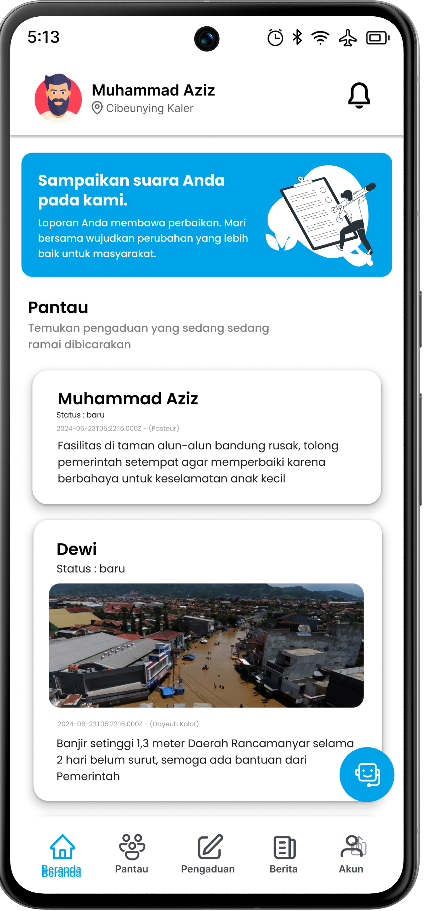
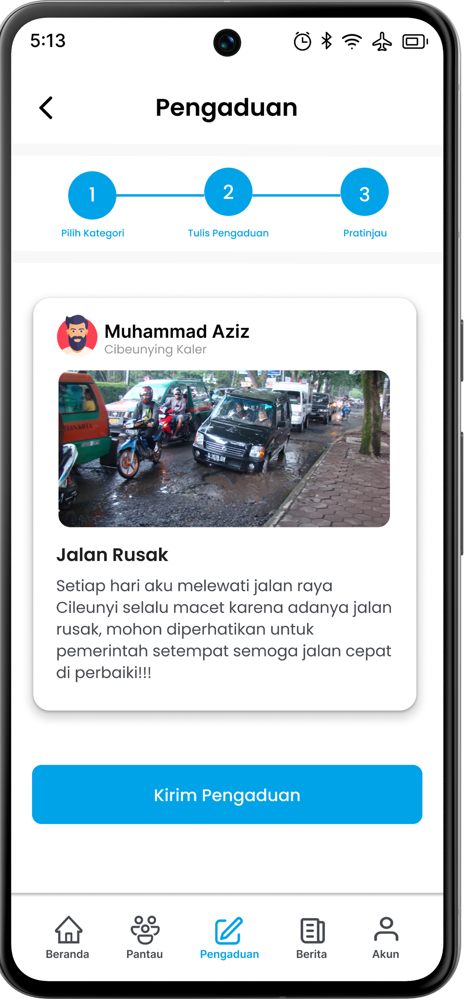
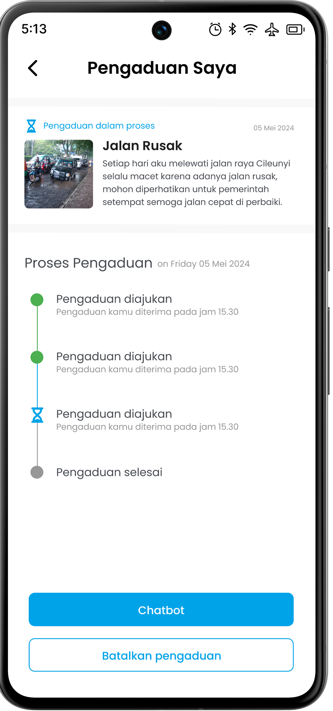
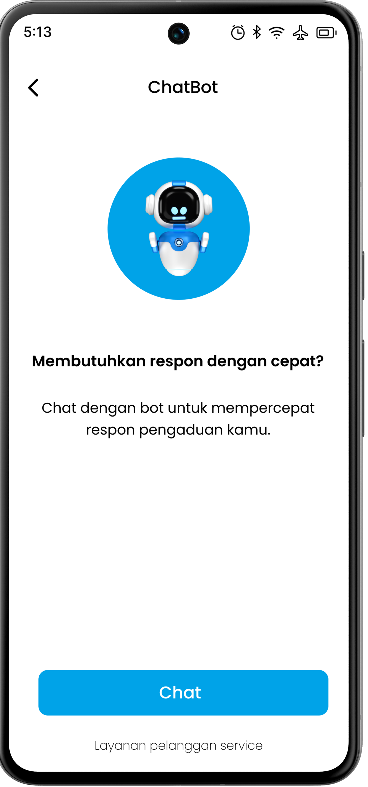
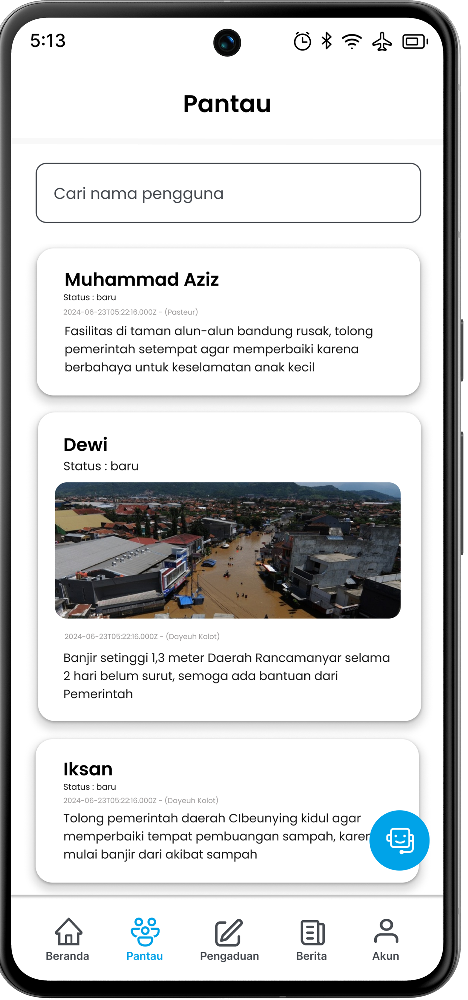
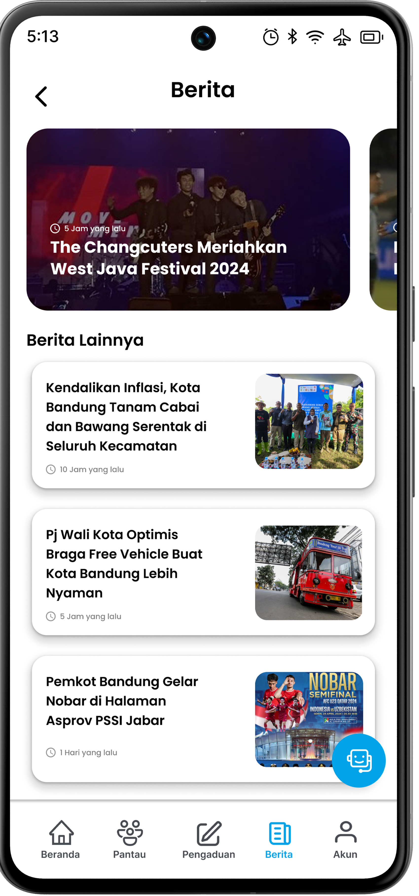
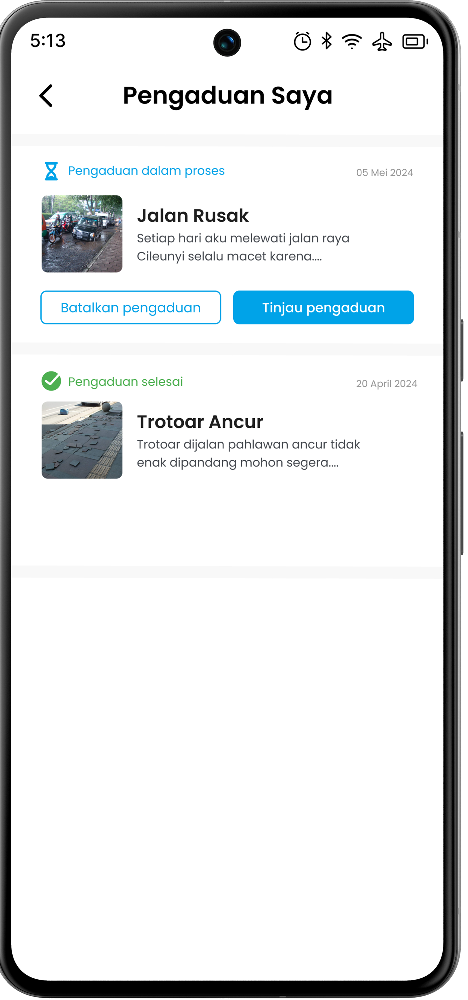
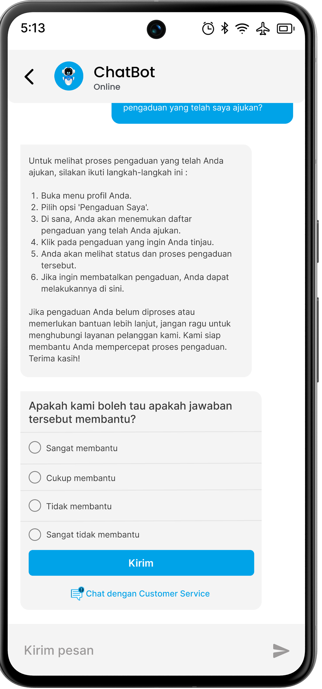
Pengujian usability dilakukan untuk mengevaluasi bagaimana pengguna berinteraksi dengan prototipe, dengan fokus pada kejelasan alur pelaporan, kemudahan navigasi, serta visibilitas pelacakan status.
Meskipun alur pelaporan sudah cukup intuitif, visibilitas dan umpan balik tetap menjadi faktor krusial. Pengguna membutuhkan konfirmasi yang jelas serta akses yang mudah terhadap status laporan agar merasa yakin bahwa laporan mereka sedang diproses.
Berdasarkan hasil pengujian, dilakukan perbaikan dengan meningkatkan visibilitas fitur status laporan, menambahkan umpan balik yang lebih jelas setelah pengiriman, serta memperbaiki petunjuk navigasi agar pengguna lebih mudah memahami alur penggunaan.